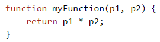
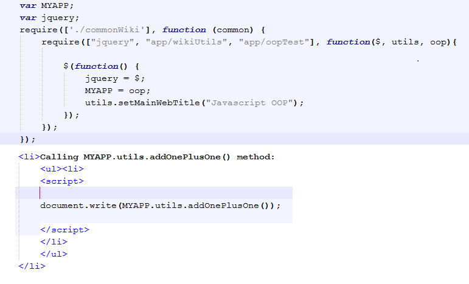

The best javascript library to use that handles a lot of javascript codes that are common usage. It has a library that handles server and client calls. It is a mix of html, css, and javascript.
To use jquery, simple call the javascript src from google in your header or to host jquery on your webserver, download the file to your server, and then call the same file from your header.
Use JSFiddle to play around with javascript and jquery.
This is the message that will be hidden on click
The selector is base on css and is use to tell jquery what element to target
Events are .click(function(){ ... }, so you can assign an event to any tag like a "p" if you wanted to.
First understand that a module/class, is not global to the web window by default when using requireJS. When you use requireJS's require, that module will only load and be available within the require local scope.
Loading a regular non-module js file populated with methods like the left image  will make the methods global and available to use on the page. but is not recommended.
Unfortunately, you'll have to either opt out using requirejs and load the js file in a non-module way manually. Or do the solution below to leak the module method into the window object.
